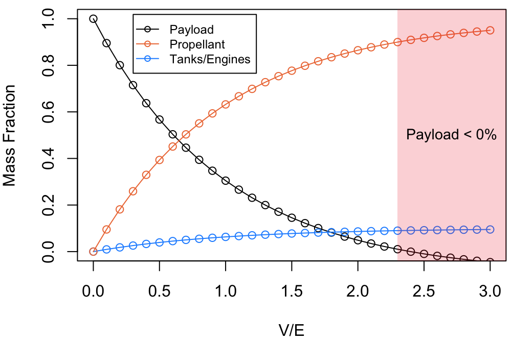

Weird Local Maxima
"Life can be much broader once you discover one simple fact: Everything around you that you call life was made up by people that were no smarter than you and you can change it, you can influence it, you can build your own things that other people can use. Once you learn that, you'll never be the same again." — Steve Jobs
It's easy to accept that the way the world currently is is the only way the world could have ended up. However, from an arguably more interesting perspective, the current state of the world can be seen as a delicate result of carefully sequenced historical events, implying even a small change in history would have led to an unimaginably different lifestyle today. If we loosely model our civilization as a machine that's trying to maximize some target metric (happiness, wealth, lifespan, knowledge, entropy, etc.), we can grade all possible configurations for society on this single metric. Since no explicit functions exist for this kind of model, we can't do a global optimization and land at the perfect society. Instead, we're given some initial configuration, and we have a rough idea of how our state compares with nearby configurations.
As an example, consider transportation in the year 1500. Most people either walked or used an animal-drawn carriage, with ships available for travel by sea. This was a decently effective solution considering the needs of people and what was available at the time. Maybe one might invent a better design for carriages or a better way to pave roads that would increase society's score. Horses were already an optimized choice for these carriages, so society wouldn't benefit from adopting another animal for transportation like pigs (maybe camels and oxen were better for different applications). The point is that society at that time evolved to use transportation in a certain way, and small changes to the configuration in the transportation system stay in the same neighborhood of some local maximum. In other words, there's a cap on the maximum score a society can achieve if they are constrained by making small adjustments. There would have been no way of knowing what combustion engines are, but that was a step-function change in our transportation that put us in a whole new league.
That got me thinking about what weird local maxima we're stuck in today. What are the combustion engines to today's horses? There would be no way of knowing what exactly those next levels would be, but we can use our current understanding of physics and economics to see how far off our current state is from ideal. I identify the following three areas as ones that, even though they have been carefully optimized over a long period of time, feel far off from the global maximum. It may require some initial activation energy to get out of these neighborhoods, but drastically different configurations could level up our society quickly.
Education
It has become quite fashionable to say that the education system is broken, and many have proposed changes that have made little to no impact in the grand scheme of human progress. I think this because, like it or not, our education system today is quite close to a local maximum.
Instead of saying the system is broken, I think a better classification is that the system, as we know it today, is obsolete. Historically, education has been about preserving different kinds of knowledge. This knowledge was usually only reserved for elite members of society until innovations like the printing press made knowledge more accessible to all. Fast-forward to today, and we have almost every corner of human knowledge documented on the internet, as well as the tools to index this information. Our effective memory has rapidly expanded as long as we have devices that can access this database. Under this construct, perhaps it makes more sense to focus on how to learn instead of what to learn.
Today, schools use curricula to set standards for what should be learned. But why should a musician be forced to study physics? It could be true that interdisciplinary experiences help with specialization in certain fields, but mandating that learning instead of allowing it to be a free choice just leads to wasted time. Standards made sense when knowledge needed to be preserved in people, but what use are they when thrust upon students who do not care to keep that knowledge in their working memory? Knowledge should be acquired as needed, which not only minimizes time wasted on studying unnecessary topics but also improves learning since the material is taught in the context in which it will be used.
Another inefficiency of schools today is time-constrained learning. School years take up a fixed portion of the calendar, where teachers have a fixed amount of material to cover, and use examinations at fixed intervals to test knowledge. This almost assures a variable outcome in performance, since different people learn different topics at different rates. While I understand there are social factors that go into fixing the time, from an actual learning perspective, this is a disastrous framework. Low-performing individuals lose confidence in their ability, when the deeper issue is that the system is an artificially constrained environment not representative of real learning. Instead, why not fix the outcome (mastery) and vary the time taken to get there?
Education today also only focuses on a narrow sliver of human activity, but a more ideal system would accommodate non-traditional areas of excellence. A student who has checked out of school should be viewed not as a failure but as one who hasn't found an area worth exploring. Curiosity and creativity are innate and strong forces; no artificial sources of motivation or punishment are required for deep learning.
The last point I'll make on inefficiencies is economic. Considering again that knowledge is stored for free on the internet, there is no intrinsic reason that education, especially higher education, should be prohibitively expensive to anyone. It seems obvious that we can create better configurations for learning than universities, although the specific form factor is unclear. Given how prohibitive yet important they are, I think colleges will be the first to become obsolete in the transition to a higher local maximum.
I think a noble metric for education to focus on is what Malcolm Gladwell refers to as human capitalization, which is the percentage of people who actually achieve what they are capable of achieving. Maximizing capitalization is obviously ideal not just for the individual but for society as a whole, which benefits from the fruits of its citizens reaching their full potential. We less need of an education system where we know all its participants met some arbitrarily defined standards than a system whose participants have discovered (or are on their way to discovering) their true value and potential in society.
Rockets
In the past few decades, space has transitioned from being merely a realm of exploration to one filled with economic opportunities, thanks in part to dropping launching costs from incredible innovations. Cheap materials, frugal engineering, and reusable rockets are opening doors to previously intractable commercial opportunities, from communication satellites to special materials synthesis to space tourism. These industries will continue to grow demand for space, but the way they get there seems quite inefficient.
Rockets work by expelling mass at high velocity in one direction, causing motion in the opposite direction to conserve momentum. The expelled mass is usually some type of fuel mixture that is combusted to create high-temperature, high-speed gases that are propelled out the back of the spacecraft. What makes rockets tricky is that they have to carry the propellant with them the entire time, which adds mass, and more mass means more fuel needed to lift the rocket. This relationship is described by the rocket equation, which gives the mass ratio (total mass of rocket to final mass of rocket, ie. all fuel expended) as a function of the ratio between delta-V (a measure of the velocity increment to accomplish a certain aerodynamic maneuver) and effective exhaust velocity (dependent on the type of fuel chosen).
The important trend from the rocket equation is the exponential increase in required propellant for an increase in velocity. And since more propellant requires bigger tanks and engines, the payload fraction (mass of payload to total rocket mass) declines. In other words, less and less of the rocket is actually the thing you want to send to space.
Consider what it would take to launch a 100 kg payload at different delta-V to exhaust velocity ratios (V/E).
The rocket is 100% payload when no delta-V is required, but of course, it doesn't go anywhere. As V/E increases, more of the rocket needs to be propellant, which in turn demands bigger tanks and engines. This model assumes a structural ratio of 0.091 (tanks/engines mass is 10% of the propellant mass). The red region in the plot represents V/E ratios where the delta-V requirement is so high that the payload would need to have a negative mass to launch. Interestingly, this red region is independent of the payload mass and represents a theoretical limit of rocket stages.
The delta-V cost of launch on Earth is 9.5 km/s, and let's use industry-standard methalox fuel, which has an effective exhaust velocity of 3.7 km/s (higher-impulse fuels like LH2/LOX exist, but they have their own problems with cost and storage). That puts the V/E requirement at 2.57, which is in the infeasible region. This is why rocket launches from Earth are multistage; while a single stage can't hit the required delta-V budget, we can split up the trip into multiple manageable stages. The first stage can impart a V/E of, say, 1.3, then the empty tanks and first-stage engines can disengage from the spacecraft to reduce the mass ratio and allow subsequent stages to complete the rest of the V/E budget.
This is why reusable rockets are such a big deal: they allow for the first stage to be recycled for multiple missions instead of rebuilding all stages every time. No doubt, multistage reusable rockets have been an incredible innovation that has brought down launch costs tremendously.
The reason I believe multistage rockets are a local maxima is the wasted efficiency by using fuel to push fuel. That's why payload fractions for today's rockets are only about 2-4%. Ideally, as much of the thrust should be delivered on the payload itself instead of pushing other non-essential things. Many designs have been proposed for such a system, but let's consider a simple, idealistic track that accelerates a rocket carrying our 100 kg payload using electromagnets.
This mass driver will impart the first 4.75 km/s of delta-V of Earth launch. Assuming the rocket is accelerated at a constant 100 m/s2 (~10 g's), the track would need to be 113 km long, which is about the distance between New York City and Philadelphia. Since the rocket itself only needs to achieve a V/E of 1.3, it can be single stage with a payload ratio 20% and thus a total mass of 500 kg (in reality, there's a lower limit to the mass of a rocket that can be launched which is above 500 kg, but the numbers scale linearly with mass). Our track needs to accelerate a 500 kg mass at 100 m/s2 over a distance of 113 km, which requires 5.6 GJ of energy. Over the 47.5 seconds it would take for the rocket to traverse the track, the electromagnets would require a constant power supply of 119 MW.
Right off the bat, it's obvious why such a launcher doesn't exist yet: it is an insanely capital-intensive investment. There are also some technical challenges like keeping the entire track at a near-vaccuum to reduce air resistance, using high-strength materials to withstand the high linear (or centripetal) accelerations, and properly sequencing high-power electronics to impart work on the payload. However, the key idea remains: all the energy of the track is being used to launch the rocket instead of being used to push more fuel. The track essentially behaves as the first stage of the rocket, allowing the second stage to be more payload-dense. In theory, such a design could launch just the payload with no rocket, but that would require a 4x increase in the already large track length or acceleration.
To be clear, I don't think rocket propulsion will ever become obsolete; we will still need propulsion for space travel. I'm just commenting on the use of multistage, propulsive rockets to launch routine, non-human payloads into orbit. Why not use the energy available on the surface to do those routine missions, which is much cheaper than launching energy up with fuel? While the CAPEX of mass drivers will be significantly higher, their OPEX will be much lower since they can leverage cheap electricity to use as efficient "fuel". This means a sufficiently high launch volume can justify such an investment. Surface launchers are easier to maintain, less technically complex than reusable rockets, and can run missions much more frequently (1 launch every few minutes vs. 1 launch every 1-2 days!).
People have tried this concept in the past, and some are still working on it today. I don't know what the next level looks like: it could be the mass driver, or it might be one of the more ambitious sci-fi proposals for space elevators and orbital rings. What I do know is, as we enter the age of space commercialization, there will be a growing demand to launch profitable payloads cheaper and more frequently than rockets are capable. Eventually, the economic case will close for one of these alternative launch mechanisms, at which point we will look back at multistage rockets as a rather silly way of doing routine missions.
AI with Digital Compute
The race to develop the first non-human consciousness is underway, and it's pushing the boundaries of our current computing paradigm. Our solution right now is to create models with larger parameters, more training data, and more compute, which has led to massive energy demand. And we're not even close to full-scale consciousness; today's models are still at the nascent stages of reasoning and completely self-unaware. At this rate, it would appear that we need to cover the Earth with large data centers and even larger power plants to even approach artificial sentience.
But does intelligence require this much energy?
Let's take a quick detour into the land of thermodynamics. The second law of thermodynamics tells us that the entropy of an isolated system cannot decrease with time. Subsystems can decrease in entropy as long as an adjacent system increases its entropy by a larger amount. This is why air conditioning works: it takes energy to segregate the warm outside air from the cool air inside your home, which otherwise would spontaneously mix until thermal equilibrium is reached.
What does this have to do with computing and AI? Computing is just manipulating information, and information is entropy! To know something necessarily requires a decrease in the degrees of freedom available to a system. If we want to perform computations with digital, deterministic bits, we have to expend lots of energy to force electrons into unnatural configurations to be able to tell 1s apart from 0s.
This isn't inherently a bad thing; in fact, it enabled the computing revolution that has accomplished superhuman tasks to advance civilization. The paradigm of the first computing era was writing deterministic software for an external entity to execute quickly and reliably. The problem arises when we transition into an advanced regime where we are no longer telling the computer what to do but rather telling the computer what to optimize and allowing it to figure out the most efficient solution to the problem . This is what neural networks do, and they are incredibly effective at solving problems where an explicit rule set does not exist (ie. most real-world problems). To solve such problems, these models use probability distributions tuned from training to explore the sample space of solutions, a process that demands randomness. This infusion of high entropy is fundamentally antithetical to the carefully constrained bits of information in our digital computers. We're running software 2.0 on hardware 1.0.
Instead of working hard to fight thermal effects at nanometer-scale transistors only to reintroduce noise during computation, why not create a completely new substrate that leverages non-equilibrium thermodynamics to solve problems? Gradient descent might be a better programmer than humans, but entropy is the best programmer. If this sounds abstract, we merely need to look at life itself to see how efficiently thermodynamics can solve problems. Biology does not use transistors and bits; it only needs a network of finite chemical reactions to run energy-efficient computations that even digital agents can't accomplish. The human brain only needs 20 watts to perform 1 exaFLOP/s of compute, compared to 20 megawatts for a comparable computation by high-end supercomputers!
Life itself can be seen as a consequence of entropy. If the universe is trying to maximize entropy by reaching thermodynamic equilibrium through relief of action potentials, then it makes sense to evolve complex structures that might independently be low entropy but contribute much higher entropy to the universe. As Jeremy England puts it: "You start with a random clump of atoms, and if you shine light on it for long enough, it should not be so surprising that you get a plant."
As with the other areas, I'm not sure what such a level-up would exactly look like. However, at the heart of any new substrate that hopes to leverage entropy has to be carefully created potentials whose resolution yields the desired solution. We can already demonstrate this at a macro level, and people are working on bringing this idea into nanoscale hardware. Once a design works, it will be the unequivocal home for superintelligent, energy-efficient AI that uses nature itself to compute instead of fighting it.
Conclusion
The challenge with moving away from any local maximum (after figuring out what the next level looks like) is high activation energy to change to a different configuration (high capital cost, regulation, long time investment, etc.). However, paradigm shifts impact civilization disproportionately when these initial investments manifest as large social and economic ROI.
What will be the next big leap humanity takes?